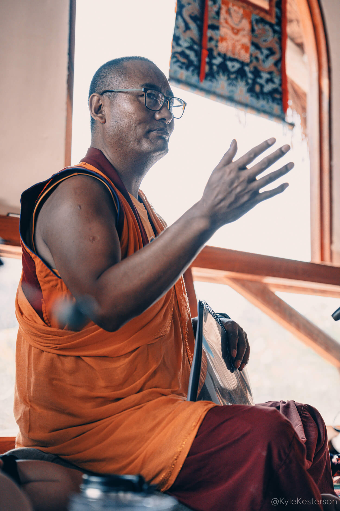
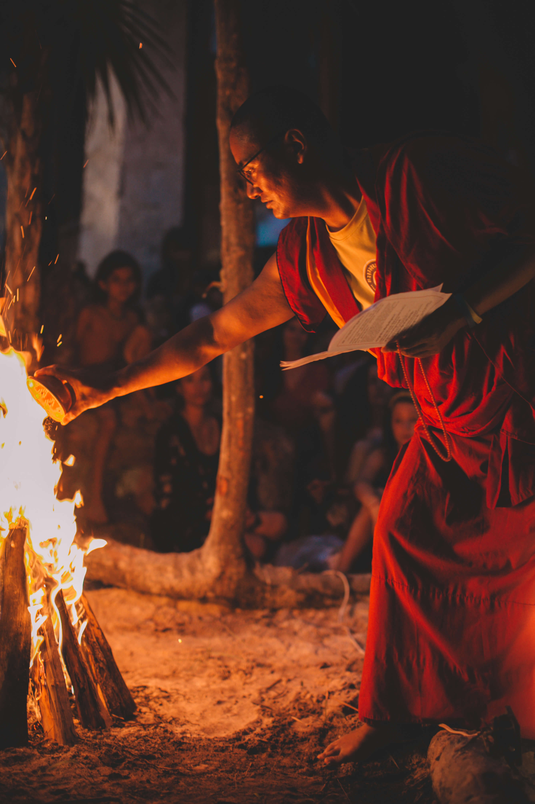

Cupos muy limitados · Viernes 28 de agosto, 2026
Khenpo Samdup Rinpoche, maestro budista tibetano, visita Maschwitz en la sede de Dhammapada Budismo Zen Argentina. Vos practicás la enseñanza, tus hijos tienen su propio espacio.
No hace falta ser budista, ni tener experiencia previa. Solo hace falta las ganas de venir con toda la familia.
Quiero mi lugarUn retiro, una charla, un espacio de meditación... y la misma pregunta de siempre: "¿y los chicos, con quién quedan?"
Así que terminás yendo vos sola, o directamente no yendo. Y la práctica espiritual se convierte en algo que "algún día, cuando estén más grandes".
Este encuentro está armado justamente para que no tengas que elegir.
En Dhammapada Budismo Zen Argentina, en Maschwitz, Khempo va a compartir sus enseñanzas de Dharma en un encuentro abierto a toda la comunidad — sin apuro, sin necesidad de saber nada de antemano.
Mientras tanto, tus hijos tienen su propio espacio infantil con actividades paralelas, pensado para que puedan divertirse y estar cómodos mientras vos aprovechás el encuentro al máximo.
Khenpo Samdup Rinpoche es maestro del linaje Drikung Kagyu, con 800 años de tradición meditativa detrás de cada palabra que va a compartir.
El mecanismo
Un día, dos espacios, ninguna excusa
No es "traé a los chicos y esperá que se porten bien". Es un espacio infantil armado específicamente para que estén contenidos mientras vos participás de una enseñanza real, con un maestro que cruzó medio mundo para estar acá.
Llegada
Recepción en Dhammapada Budismo Zen Argentina. Acomodás a tus hijos en el espacio infantil y vos pasás a la sala de enseñanza.
Enseñanza
Khempo comparte sus enseñanzas de Dharma, con espacio para preguntas. En paralelo, tus hijos participan de las actividades del espacio infantil.
Cierre
Un cierre en comunidad, con lugar para compartir impresiones antes de volver a casa con algo nuevo para llevarte.

Quién te va a guiar
Khenpo Samdup Rinpoche
Nacido en Kham (Tíbet oriental), discípulo de S.E. Garchen Rinpoche desde los siete años. Es autor de siete libros sobre budismo y meditación, y hoy dirige centros de Dharma en Estados Unidos y comunidades en Canadá, México, Brasil y Europa.
"Todas las enseñanzas del Buda son excelentes; dentro de ese reconocimiento, sientes gratitud hacia tu propio linaje." — S.E. Garchen Rinpoche
Pensado para ir en familia, sin complicaciones.
Acceso al encuentro de enseñanzas de Dharma con Khempo
Espacio infantil con actividades paralelas, sin costo adicional por niño
Espacio de preguntas y respuestas con Khempo
Grupo con cupo limitado por la capacidad del centro
Tu entrada
$10.000ARS
Por adulto · niños sin cargo
Quiero mi lugar* Valor de referencia — se confirma al completar el formulario.
Tranquilidad para vos
Si por algún motivo de fuerza mayor se reprograma el encuentro, tu entrada queda automáticamente válida para la nueva fecha.
Sin letra chica: escribinos y lo resolvemos.
Cupo limitado por la capacidad del centro.
Es la primera vez que Khempo visita Argentina. Cuando se completa el grupo, se cierra la inscripción.
Contanos las edades en el formulario y te confirmamos el detalle de las actividades según el grupo etario del día.
No. Es un encuentro abierto a toda la comunidad, seas budista o simplemente tengas curiosidad por conocer la práctica.
Al reservar tu lugar te mandamos la dirección exacta y cómo llegar.
Por supuesto, el encuentro está abierto a cualquier persona, con o sin chicos.
Completá tus datos y te contactamos para confirmar tu cupo.